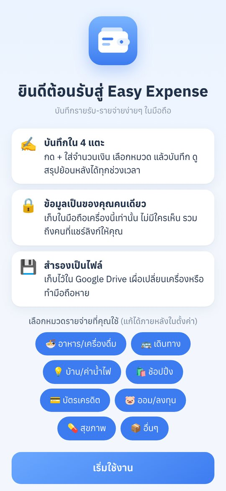
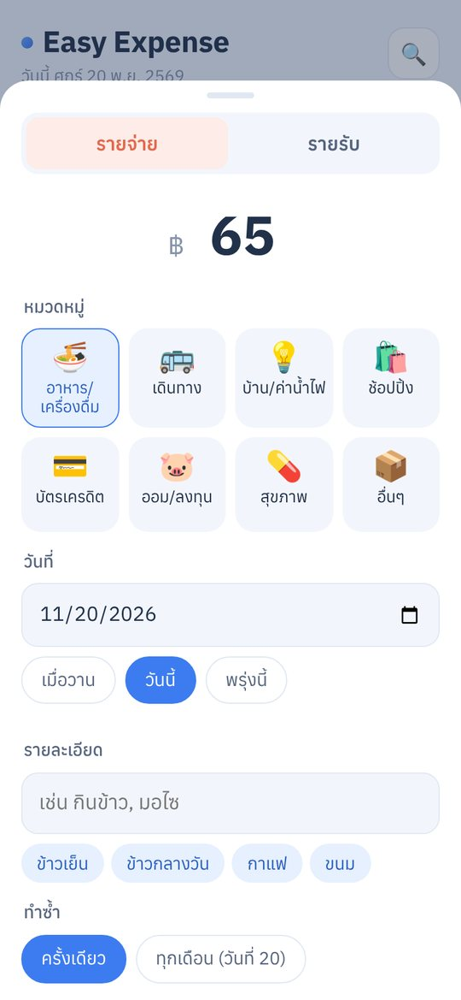
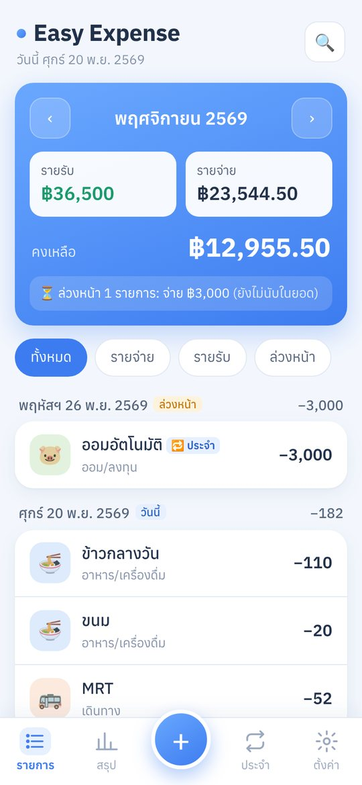
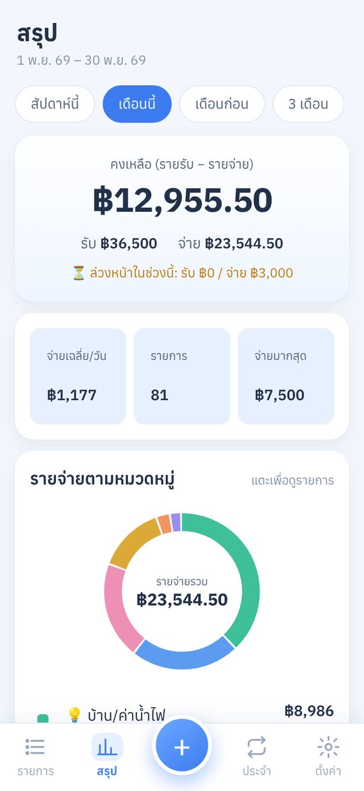
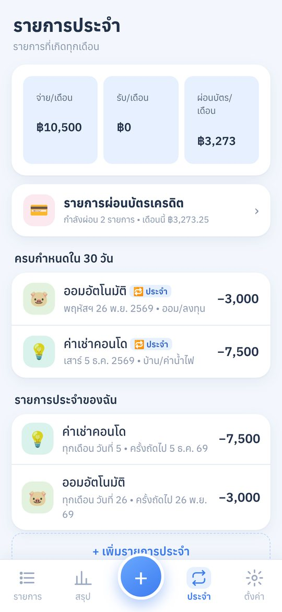
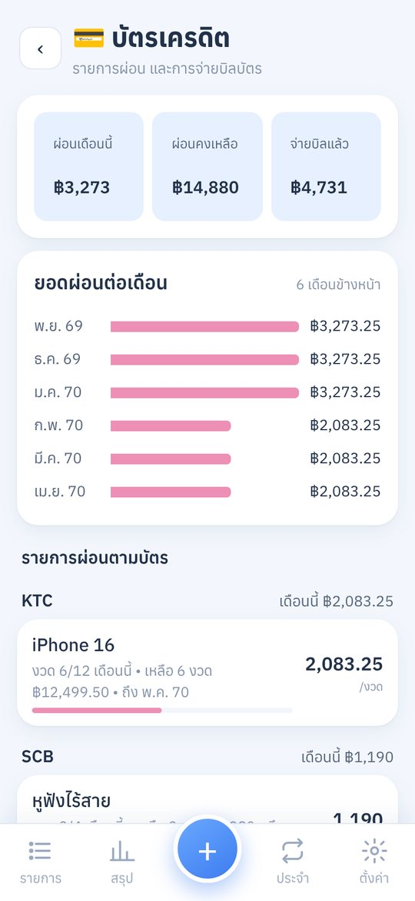
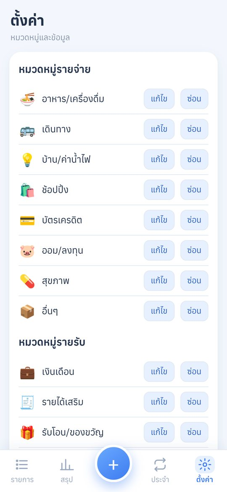
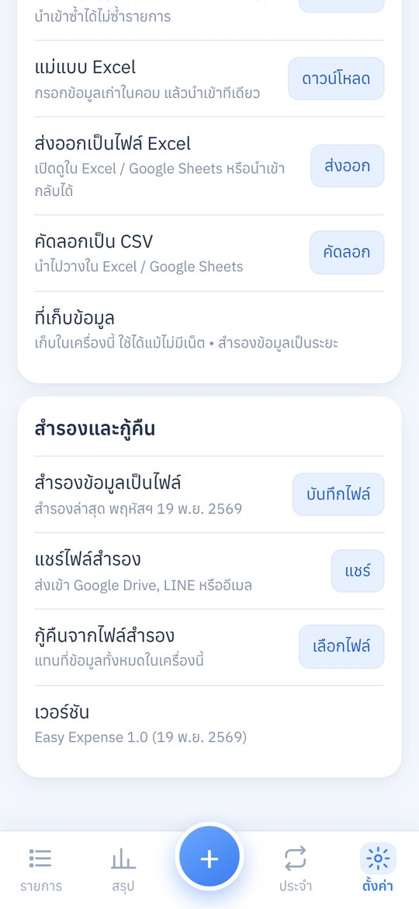

1. ติดตั้งแอปลงมือถือ
ติดตั้งครั้งเดียว แล้วเปิดจากไอคอนได้เหมือนแอปทั่วไป ใช้ได้แม้ไม่มีเน็ต
Android
- เปิดลิงก์แอปใน Chrome (ถ้าเปิดจาก LINE ให้กด ⋮ → เปิดในเบราว์เซอร์อื่น → Chrome)
- รอหน้าแอปโหลดครบสักครู่
- กด ⋮ มุมขวาบน → ติดตั้งแอป → ติดตั้ง
- ไอคอนกระเป๋าสตางค์สีฟ้าจะอยู่บนหน้าจอหลัก
iPhone
- เปิดลิงก์ใน Safari
- กดปุ่มแชร์ (สี่เหลี่ยมมีลูกศรขึ้น) → เพิ่มไปยังหน้าจอโฮม → เพิ่ม
กดค้างที่ไอคอน (Android) จะมีทางลัด เพิ่มรายการ และ ดูสรุป
2. เริ่มต้นครั้งแรก
ครั้งแรกที่เปิด แอปจะให้เลือกหมวดรายจ่ายที่คุณใช้ หมวดที่ไม่ได้ใช้แตะเพื่อปิดได้ (เปิดคืนได้ในตั้งค่า) แล้วกด เริ่มใช้งาน
ถ้าเคยใช้แอปนี้ในเครื่องอื่น กด มีไฟล์สำรอง? กู้คืน แล้วเลือกไฟล์สำรองของคุณ

3. บันทึกรายการ
- กดปุ่ม + สีฟ้าตรงกลางด้านล่าง
- เลือก รายจ่าย หรือ รายรับ
- พิมพ์จำนวนเงิน
- แตะหมวดหมู่
- พิมพ์รายละเอียด หรือแตะคำที่แอปแนะนำ (แอปจำคำที่คุณใช้บ่อย)
- กด บันทึก — มีหลายรายการ กด บันทึก + ต่อ
ย้อนหลัง/ล่วงหน้า: แตะ เมื่อวาน / พรุ่งนี้ หรือเลือกวันในปฏิทิน รายการล่วงหน้าจะมีป้ายสีส้ม และยังไม่นับในยอดจนถึงวันนั้น
ทำซ้ำทุกเดือน: เลือก ทุกเดือน ใต้ช่องรายละเอียด รายการจะขึ้นเองทุกเดือน

4. หน้ารายการ
- กล่องสีฟ้าด้านบนแสดง รายรับ รายจ่าย และคงเหลือของเดือน
- กด ‹ › เพื่อดูเดือนอื่น แตะชื่อเดือนเพื่อกลับเดือนปัจจุบัน
- ตัวกรอง ทั้งหมด / รายจ่าย / รายรับ / ล่วงหน้า • ปุ่ม 🔍 ค้นหารายการ
- แก้ไขหรือลบ: แตะที่รายการ ลบแล้วกด เลิกทำ ได้ภายใน 5 วินาที

5. สรุป
แท็บ สรุป เลือกช่วงเวลา สัปดาห์นี้ เดือนนี้ เดือนก่อน 3 เดือน 6 เดือน ปีนี้ หรือ กำหนดเอง
- วงกลมแสดงสัดส่วนรายจ่ายตามหมวด แตะหมวดเพื่อดูรายการในหมวดนั้น
- กราฟแท่งรับเทียบจ่าย แตะแท่งเพื่อดูตัวเลข
- จ่ายเฉลี่ยต่อวัน และรายจ่ายที่มากที่สุด

6. รายการประจำ
แท็บ ประจำ สำหรับรายการที่เกิดทุกเดือน เช่น ค่าเช่า ค่าเน็ต ออมเงิน
- กด + เพิ่มรายการประจำ → ใส่จำนวน หมวด รายละเอียด วันที่ในเดือน และเดือนเริ่ม
- เดือนไหนไม่เกิด: แตะรายการที่มีป้าย 🔁 → ข้ามครั้งนี้ หรือแก้ยอดเฉพาะครั้งนี้
- ใช้ไปสักพัก แอปจะ แนะนำ รายการที่เกิดซ้ำทุกเดือนให้เพิ่มได้ในแตะเดียว

7. บัตรเครดิตและรายการผ่อน
เข้าได้จากการ์ด รายการผ่อนบัตรเครดิต ในแท็บประจำ หรือแตะหมวดบัตรเครดิตในหน้าสรุป
- กด + เพิ่มรายการผ่อน → ชื่อสินค้า บัตร ยอดต่องวด จำนวนงวด เดือนของงวดแรก
- แอปบอกว่าเดือนนี้งวดที่เท่าไร เหลือกี่งวด กี่บาท และยอดผ่อนต่อเดือนล่วงหน้า 6 เดือน
- รวมอยู่ในบิลบัตรแล้ว (ค่าเริ่มต้น): ถ้าคุณบันทึก "จ่ายบัตร" เป็นยอดรวมอยู่แล้ว ยอดผ่อนจะไม่ถูกนับซ้ำ

8. ปรับหมวดหมู่
แท็บ ตั้งค่า → หมวดหมู่รายจ่าย / รายรับ
- แก้ไข: เปลี่ยนชื่อหรืออีโมจิ
- ซ่อน: หมวดที่ไม่ใช้ รายการเดิมยังอยู่ครบ
- เพิ่มหมวดหมู่ใหม่: เลือกประเภท ใส่อีโมจิและชื่อ → เพิ่ม

9. สำรองข้อมูลและย้ายเครื่อง
สำคัญ: ข้อมูลเก็บในมือถือเครื่องนี้เท่านั้น ถ้าลบแอปหรือล้างข้อมูล Chrome ข้อมูลจะหาย ควรสำรองทุก 1–2 สัปดาห์ (แอปจะเตือนถ้าเกิน 14 วัน)
- แชร์ไฟล์สำรอง → เลือก Google Drive หรือ LINE Keep (แนะนำ)
- บันทึกไฟล์ → ไฟล์ .json อยู่ในโฟลเดอร์ ดาวน์โหลด
- เปลี่ยนเครื่อง: ติดตั้งแอปในเครื่องใหม่ → ตั้งค่า → กู้คืนจากไฟล์สำรอง → เลือกไฟล์
ห้ามกด ล้างข้อมูล ของแอป Chrome ในตั้งค่า Android และตอนล้างประวัติ Chrome อย่าเลือก "คุกกี้และข้อมูลเว็บไซต์"

10. นำเข้าและส่งออก Excel
- มีข้อมูลเก่า? ตั้งค่า → แม่แบบ Excel → ดาวน์โหลด → กรอกในคอม (วันที่ | ประเภท | หมวดหมู่ | รายละเอียด | จำนวนเงิน) → ส่งไฟล์เข้ามือถือ → ตั้งค่า → นำเข้าจาก Excel / CSV
- หมวดที่ไม่มีในแอป จะถูกสร้างให้อัตโนมัติ • นำเข้าซ้ำได้ ไม่เกิดรายการซ้ำ
- ส่งออกเป็นไฟล์ Excel: เปิดดูใน Excel / Google Sheets หรือใช้นำเข้ากลับ
11. ความเป็นส่วนตัว
- แอปไม่มีระบบสมาชิก ไม่ต้องสมัคร ไม่ส่งข้อมูลการเงินของคุณไปที่ใด
- คนที่แชร์ลิงก์ให้คุณ มองไม่เห็นข้อมูลของคุณ เพราะข้อมูลอยู่ในมือถือคุณเท่านั้น
- ไฟล์สำรองมีข้อมูลการเงินทั้งหมด เก็บไว้ในที่ที่เชื่อถือได้
12. คำถามที่พบบ่อย
- ไม่เห็นเมนู "ติดตั้งแอป"
- เปิดในแอป LINE/Facebook อยู่ ให้เปิดลิงก์ใน Chrome แล้วรอหน้าโหลดครบ
- ใช้หลายเครื่องพร้อมกันได้ไหม
- ข้อมูลแต่ละเครื่องแยกกัน ย้ายข้อมูลได้ด้วยไฟล์สำรอง แต่ยังไม่ซิงก์อัตโนมัติ
- ขึ้นแถบ "มีเวอร์ชันใหม่ของแอป"
- กด อัปเดต แอปจะโหลดใหม่ ข้อมูลไม่หาย
- ข้อมูลหาย
- ตั้งค่า → กู้คืนจากไฟล์สำรอง → เลือกไฟล์ล่าสุด